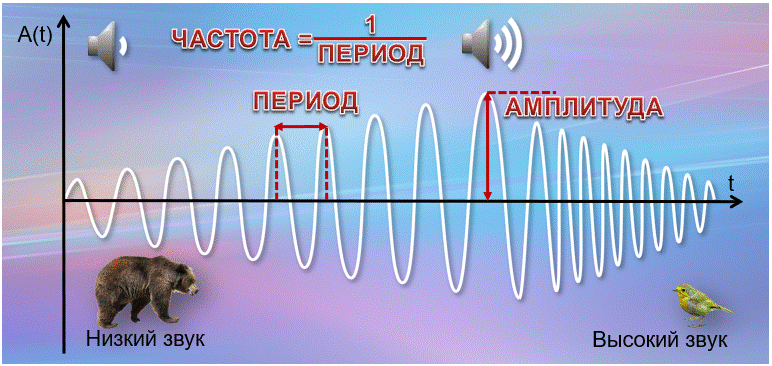

У каждого символа в сообщении есть информационный вес. Он имеет фиксированное количество информации.
Символы одного алфавита имеют одинаковый вес, зависящий от мощности алфавита.
Информационный вес символа двоичного алфавита принят за минимальную единицу измерения информации и называется 1 бит (bit)
